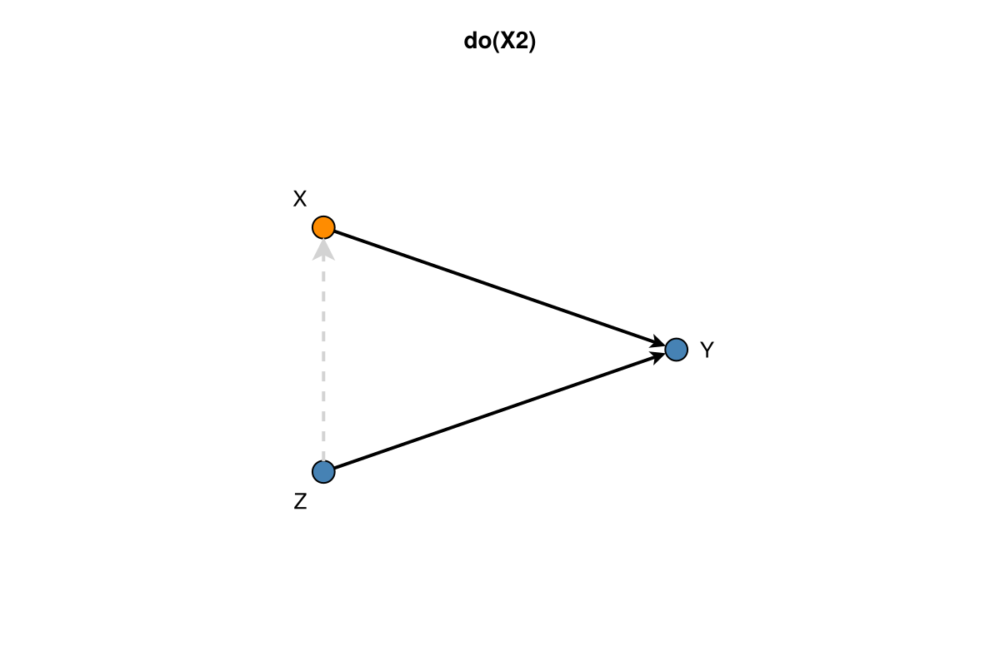
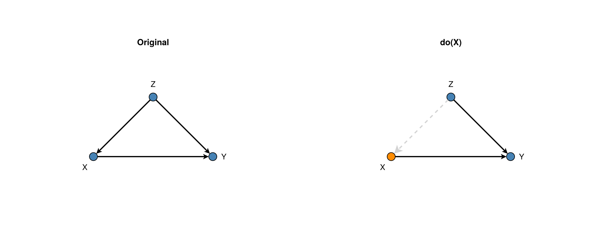

Interventions (do(·))
Graph surgery and intervention plots live in DAGMakie. Display follows Pearl’s do(·) graph surgery (Pearl, 2009). do_surgery is display-only (mutilate a DAG for figures); it is not an identification API.
Boundary with CausalDynamics.jl
DAGMakie reuses Pearl names (Intervention, CausalQuery, do_surgery) for diagram rendering only. For whether an effect is identifiable, and for executable SCM/CDM interventions, use CausalInference.jl or CausalDynamics.jl (DoIntervention, apply_intervention, causal_projection). When calling do_surgery with a process or semantic graph_kind, DAGMakie refuses surgery unless you pass an explicit causal projection or set allow_non_causal = true.
Single-node intervention and removed edges
By default (show_removed_edges = true), dagplot_intervention and dagplot_do overlay severed incoming arrows in dashed light grey. When label_position = :outer, labels align against the factual graph (label_obstacle_graph) so those grey removed parent edges still count as obstacles.
using Graphs, DAGMakie, CairoMakie
g, labels = confounding_graph(["Z", "X", "Y"])
# do(X): remove incoming edges to X
g_do = do_surgery(g, 2)
@assert !has_edge(g_do, 1, 2)
@assert has_edge(g_do, 2, 3)
fig, ax, p = dagplot_intervention(g, Intervention(2); labels = labels)
fig
Pass show_removed_edges = false to hide the severed arrows, or do_node_labels = true to rewrite the intervened node’s label to do(X) (by default do_node_labels = false keeps the node label "X" intact and puts do(X) in the axis title).
Side-by-side comparison and CausalQuery
dagplot_do_comparison (and dagplot_comparison) place the factual and intervened DAGs side by side using a shared DAGLayoutResult and linked axes so node positions and scale match across panels. CausalQuery and query_to_string format interventional or conditional distributions for plot titles:
using Graphs, DAGMakie, CairoMakie
g, labels = confounding_graph(["Z", "X", "Y"])
q = CausalQuery(2, 3; intervention = Intervention(2))
@assert query_to_string(q, labels) == "P(Y | do(X))"
fig = dagplot_do_comparison(g, 2; labels = labels)
fig